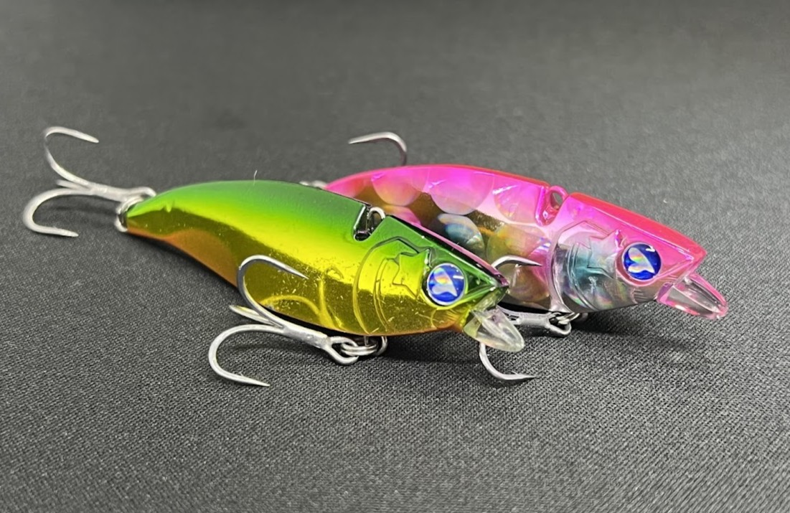
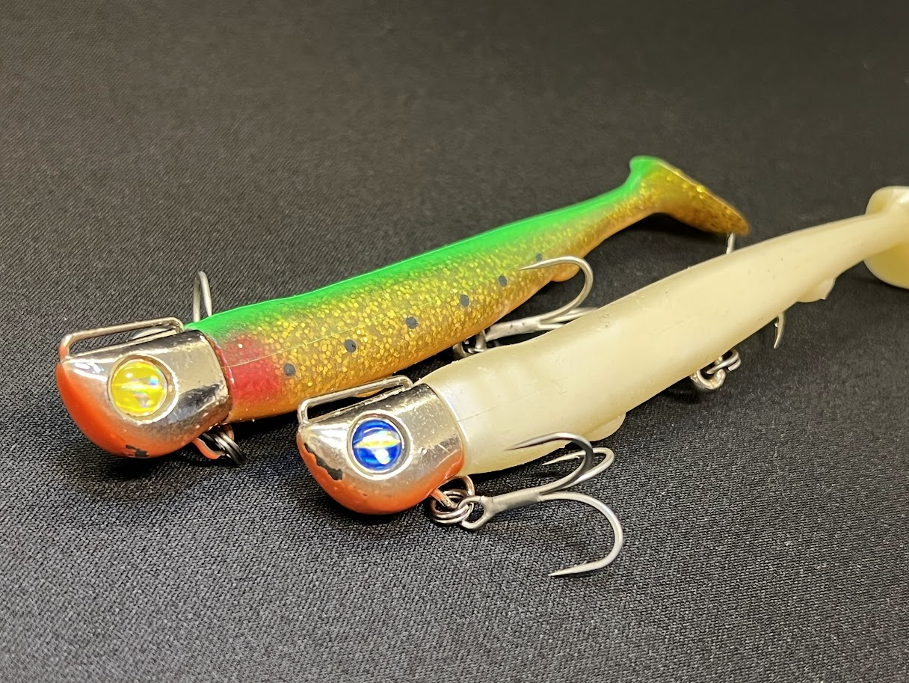

BlueBlue（ブルーブルー）村岡昌憲が率いる、東京発のソルトルアーブランド
ブローウィンやナレージ、スネコンなど、シーバスの定番ルアーを数多く生み出しているメーカー。「少年のころに感じたワクワクするモノづくり」をコンセプトに、心が満たされる道具を作り続けています。特徴・本拠地・プロスタッフ、そして人気のルアーをまとめました。
基本データ
| 社名 | ブルーブルー株式会社（BlueBlue） |
|---|---|
| 本拠地 | 東京都中央区（東京本社） ほかに館山オフィス（千葉県館山市）、松戸工場（千葉県松戸市） |
| 代表者 | 村岡 昌憲（代表取締役） |
| 設立 | 2011年 |
| 得意ジャンル | シーバス、チヌ（チニング）、フラットフィッシュ、青物、ライトゲーム |
| コンセプト | 少年のころに感じた、ワクワクするモノづくり |
| 名前の由来 | 「鳥から見た海の色」「魚から見た空の色」 |
| 代表ルアー | ブローウィン、ナレージ、スネコン、アイザー、ジョルティ |
| 公式 | bluebluefishing.com |
※代表者・製品ラインナップは変わることがあります。最新情報は公式サイトでご確認ください。
BlueBlueの3つの特徴
1シーバス界のトップアングラーが立ち上げたブランド
1990年代からシーバスのルアーフィッシングを牽引してきたプロアングラー・村岡昌憲さんが、2011年に立ち上げたメーカーです。ナイロンラインが主流だった時代からPEラインでのシーバス釣りを広めてきた経験が、ルアーづくりに活かされています。
2自社工場を持ち、シーバス以外のジャンルも幅広い
千葉県松戸市に工場を構えています。シーバス用のミノーやバイブレーションだけでなく、チヌ用のトップウォーター、ライトゲーム用のワーム、エギ、メタルジグ、ロッドやウェアまで、ソルトルアーゲームの道具を幅広く展開しています。
3ひと目でわかる個性と発信力
ブローウィンの“かっ飛び”、ナレージの“エビらない・根がからない”、スネコンのS字軌道など、個性のはっきりしたルアーが多いのが特徴です。YouTubeやInstagramなどSNSでの発信にも力を入れていて、使い方の情報を手に入れやすいのも魅力です。
代表的なプロ・スタッフ
BlueBlueに所属するプロ・スタッフの一部を紹介します。
村岡 昌憲（むらおか まさのり）
BlueBlueの創設者で代表取締役。1990年代からシーバスルアーのブームを牽引してきた、シーバス界を代表するプロアングラーです。釣り人向けSNS「fimo」の立ち上げにも関わり、YouTube「マサッチ釣りチャンネル」では釣りの質問に答える企画などが人気です。
高橋 優介（たかはし ゆうすけ）
BlueBlue唯一のプロスタッフで、釣り業界の若手プロの中でも注目の存在。もともとはBlueBlueの工場に入社し、爽やかなルックスと人当たりの良さが社内で評判になったことから「工場勤務よりプロになるべき」と推薦され、プロの道へ進んだというユニークな経歴の持ち主です。釣り番組への出演も増えています。YouTubeでは「1万円縛り」で釣り具を揃えてシーバスを狙う企画など、初心者でも楽しめるコンテンツを配信しています。
小原 暁彦（おはら あきひこ）
「コバッチ」の愛称で親しまれる、鹿児島県のシーバスアングラー。BlueBlue随一の大食いとしても知られる愛されキャラで、地元ではトップクラスの実力者として有名です。チニングも得意で、チヌ用トップウォーター「ガボッツ」は彼の代表ルアーです。
BlueBlueの人気ルアー5選
BlueBlueのルアーはサイズ違いのシリーズ展開が基本。まずはシリーズごとの「得意なこと」を押さえておくと選びやすくなります。

ブローウィン（Blooowin!）ミノー
BlueBlueを代表する“かっ飛び”ミノー。細身のボディにタングステンウェイトを内蔵し、強風下でも安定した飛距離とアクションを出せるのが最大の特徴です。
140Sは河口や干潟、サーフなど流れの効く広いエリアを効率よく探れる基準モデル。小型ベイトなら80Sや110S、大場所のシャローなら167Fシャローと、サイズで守備範囲が分かれています。
👉 詳しくは ブローウィン140Sの解説記事 へ

ナレージ（Narage）バイブレーション
「エビらない・根がからない・低速で泳ぐ」の三拍子がそろった万能バイブレーション。リップの効果で根掛かりしにくく、低速でもしっかり振動するので、エリアを問わず使えます。
シーバスゲームでトップクラスの釣果を誇り、バイブレーション入門にもおすすめのシリーズです。
👉 詳しくは ナレージ65の解説記事／ナレージ50の解説記事 へ

スネコン（SNECON）シンキングペンシル
頭部のラダー構造と非安定型重心で、巻くだけでワイドなS字軌道を描くシンキングペンシル。流れの変化が大きいほど、遠くに投げるほど動きが際立ちます。
シーバスだけでなく、トラウトや大型魚向けのモデルまで展開されている人気シリーズです。
👉 詳しくは スネコン90Sの解説記事 へ

アイザー（AIZER）シャローランナー
「究極の使いやすさ」を突き詰めたシャローランナー。誰が投げても飛び、強めのアクションで広範囲から魚を呼べるので、「ポイントに着いたら迷わず、先発はAIZER」というコンセプトのルアーです。
125Fはレンジ5〜30cm。干潟や河口のシャローで、最初に投げるパイロットルアーとして使いやすい1本です。
👉 詳しくは アイザー125Fの解説記事／アイザー100Fの解説記事／アイザー125リラードの解説記事 へ

ジョルティ（JOLTY）ジグヘッドワーム
ワームの弱点だった「飛距離」を克服した、食わせ力満載のジグヘッドワーム。ド派手なハイピッチローリングと尻振りアクションで、シーバスやフラットフィッシュを狙えます。
3インチの小型版「ジョルティmini」もあり、プラグに反応しない魚へのフォローベイトとしても使えます。
👉 詳しくは ジョルティの解説記事／ジョルティminiの解説記事 へ
※スペックは代表的なサイズです。リニューアル等で変わる場合があります。
画像出典:BlueBlue公式HP
最初の1つの選び方
- 河口・干潟のシーバス → アイザー125F＋ブローウィン140S
- 港湾・河川を手早く探りたい → ナレージ65
- 流れのある河川 → スネコン90S
- サーフ・遠投が必要な場所 → ジョルティ
よくある質問
BlueBlueはどこの国のメーカー？
日本のメーカーです。東京都中央区に本社があり、千葉県に館山オフィスと松戸工場があります。
「BlueBlue」という名前の由来は？
「鳥から見た海の色」と「魚から見た空の色」をイメージして名付けられました。
BlueBlueの社長は誰？
シーバスのプロアングラーとして知られる村岡昌憲さんが代表取締役を務めています。
初心者でも使える？
使えます。アイザー125Fやナレージ65は投げて巻くだけで泳ぐので、ルアー釣りを始めたばかりの人にもおすすめです。